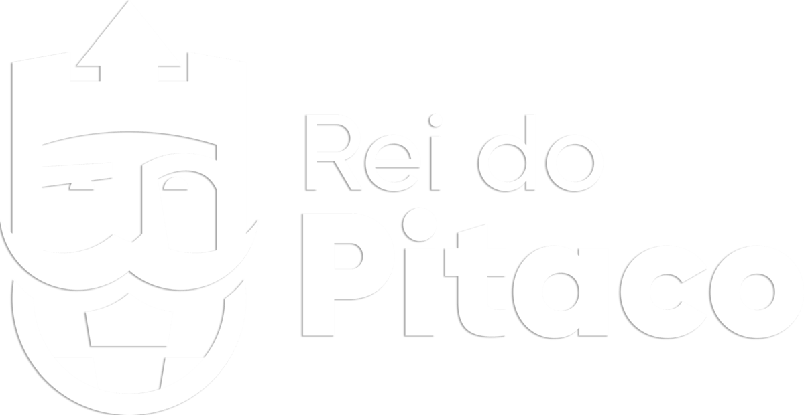

JC Slots: A Melhor Central de Apostas do Brasil
Um trabalho de: JC Studios

A Jon Bet é uma casa de apostas online recente no mercado brasileiro, lançada no início de 2024 e promovida pelo influenciador Jon Vlogs. Ela oferece uma plataforma para apostas esportivas e jogos de cassino, com destaque para o cassino ao vivo, onde jogadores podem interagir com dealers. Para novos usuários, a Jon Bet oferece um bônus de boas-vindas que dobra o primeiro depósito até R$1.000 e inclui 40 rodadas grátis, embora essa oferta seja válida apenas para o cassino. O site tem uma licença de operação em Curaçao, o que garante sua legalidade no Brasil até a regulamentação completa no final de 2024.
A variedade esportiva é ampla, abrangendo mais de 48 modalidades, incluindo competições nacionais e internacionais de futebol. A plataforma também possui recursos como cash out, que permite encerrar apostas antes do término dos eventos, e uma interface de fácil navegação. O suporte ao cliente está disponível 24 horas via chat ao vivo, e o único método de pagamento atual é o Pix, com processamento imediato tanto para depósitos quanto saques.
Essas características, aliadas ao alto nível de segurança do site, fazem da Jon Bet uma escolha interessante para quem busca um ambiente confiável e dinâmico para apostas online.
Blaze é uma plataforma de apostas online que opera tanto com jogos de cassino quanto apostas esportivas, sendo especialmente conhecida pelo jogo de cassino "Crash", que é um dos favoritos entre seus usuários. Ela surgiu no mercado brasileiro em 2022 e se popularizou rapidamente, graças a campanhas publicitárias com influenciadores e patrocínios esportivos. Com uma licença de operação emitida pelo governo de Curaçao, Blaze é considerada uma plataforma confiável em termos de segurança e regulamentação internacional, utilizando tecnologias de proteção de dados como SSL/TLS. Apesar disso, a plataforma enfrenta críticas em relação a alguns aspectos, como o tempo de processamento de saques e a disponibilidade limitada de opções de pagamento e contato com o suporte. A Blaze oferece bônus de boas-vindas para o cassino, com valores que podem chegar a R$1.000, mas exige que o usuário aposte várias vezes o valor depositado antes de poder fazer retiradas. No entanto, não há atualmente um bônus específico para apostas esportivas. Além do site otimizado para dispositivos móveis, a Blaze não possui um aplicativo oficial, algo que difere de outras casas de apostas, embora o site seja compatível com navegação em smartphones

Rei do Pitaco é uma plataforma de apostas que se destaca principalmente na modalidade de fantasy games (jogos de fantasia) no Brasil.
Lançado em 2019, o aplicativo já acumulou mais de 13,6 milhões de downloads, capitalizando a popularidade do futebol no país. O Rei do Pitaco oferece uma experiência interativa onde os usuários podem criar equipes e participar de ligas baseadas no desempenho real dos atletas.
Modalidades de Jogo
A plataforma disponibiliza diferentes modalidades de apostas:
-Daily Fantasy Sports (DFS): Os usuários escolhem jogadores de diversas ligas e competições, acumulando pontos conforme o desempenho desses atletas em jogos reais. As premiações variam de R$50 a R$20 mil, dependendo da liga escolhida
.
-Fantasy Turbo: Uma abordagem mais ágil onde os participantes fazem prognósticos sobre o desempenho individual dos jogadores em jogos reais. Por exemplo, um usuário pode apostar em quantos gols um jogador fará ou quantas defesas um goleiro realizará
.
-Modalidade Dobro ou Nada: Uma opção onde os participantes têm a chance de dobrar o valor de suas inscrições, mas apenas se estiverem entre os melhores classificados
.
Funcionalidades e Pagamentos
O Rei do Pitaco permite apostas rápidas e práticas, com um método de pagamento eficiente via Pix, que possibilita saques rápidos, geralmente processados em menos de um minuto.
A plataforma está em fase de expansão para incluir apostas esportivas mais tradicionais, em parceria com a operadora Kambi, o que pode potencialmente diversificar ainda mais suas ofertas